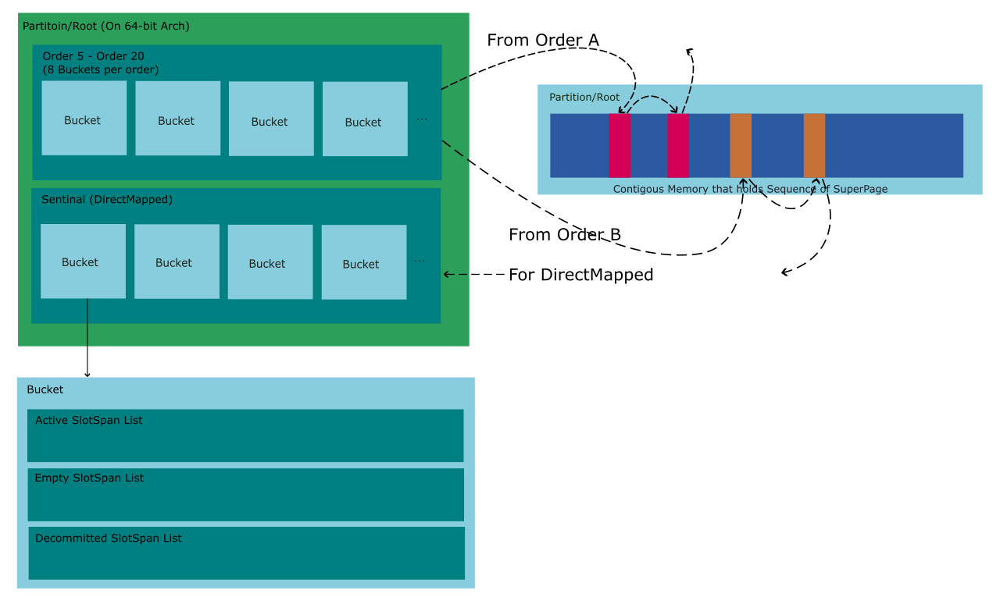

PartitionAllocator (PA)
Table of Contents
1. Glossary
\texttt{base/allocator/partition\_allocator/glossary.md}
2. Introduction
PA gurantee that allocate memory security, fast and low latency. This document will deep into the inside of PA.
3. Inside PartitionAllocator (PA)
PA is essentially an allocator, which provide two main operations:
- Alloc
- Free
Follow these operations could be a way to understand the internal of PA. Let’s talk about the Alloc of PA. When you request memory from PA, you are actually request memory from Partition, a structure that hold a region of memory and caller able to reserve memory from it. PA is more like a frontend to enable another objects to use memory from Partition so just deep inside the internal of Partition.
3.1. The Whole structure of PartitionRoot
The following diagram show structure of Partition or Root. The structure is logical rather than physical, which means this structure is not same as the layout they present in memory.

Partition is a structure to maintain a consecutive memory among Reserve and Unreserves, it also gurantee that those Reserve and Unreserve are fast,low latency and security. For these purposes, there are extra level of Pages and allocation units are defined, their are documented in glossary.md (\texttt{base/allocator/partition\_allocator/glossary.md}), knowledge of glossary.md is the requisition of following contents.
3.1.1. Important Objects in PA
- Partition/Root
A entity that hold all virtual address space that has reserved memory (By AddressPollManager). Partition split these memory into SuperSpages except directmap object but still align to the size of SuperPage.
The entity also serve as the entry to require or release memory, so some important statistics are recorded here.
- Bucket
A collection of regions in a partition that contains similar-sized objects. Regions in a Bucket are not required to be consecutive. For the purposes of fast and low latency, States of reserved memory is keep tracked, but tack directly to reserved memories is complicated and fussy so another abstraction is created to help, which is SlotSpan.
- SlotSpan
SlotSpan can be one of four major states:
- Active: Slotspan has free slots.
- Full: No free slots.
- Empty: All slots of such Slotspan are free.
- Decommitted: A Empty SlotSpan that had its backing memory back to the system.
States of SlotSpan of a SlotSpan list are almost equal. Which is explained in comment in source code:
Bucket maintain three SlotSpan Lists:
- Active
- Empty
- Decommitted
I was wonder why only three of four states are maintained by PA, how PA maintain all SlotSpans that in Full states. I got the fact of how to maintain SlotSpans After reading the part that how it Free allocated objects. More precisely, PA does not maintain any Full SlotSpans, those Slotspans is not reside in any of those lists. Full SlotSpans is actually hold by the caller who request for memory from PA. It’s make sense that memory of a Full SlotSpan must hold by requester, if we able to perfrom transformation between address of payload of SlotSpan and address of SlotSpan then able to left those Full SlotSpans out of PA before their freed.
3.2. How to alloc SuperPages ?
Following contents of this section is the details of \textt{PartitionBucket
Pseudo Code to explain how to allocate a single SuperPage.
data Root = Root {
-- An address of memory that new SuperPage should be resided on.
next_super_page :: Address
-- An address of memory that new PartitionPage should be resided on
next_partition_page :: Address
}
-- Entry
AllocNewSuperPage :: Root -> IO (Maybe Address)
AllocNewSuperPage r = do
span <- AllocNewSuperPageSpan r
if isNothing span
then return Nothing
-- Return the address of begin of payload of the SuperPage.
else return $ SuperPagePayloadBegin span
AllocNewSuperPageSpan :: Root -> IO (Maybe SuperPage)
AllocNewSuperPageSpan r = do
let requested_address = r.next_super_page
let requedted_superpage = ReserveMemoryFromPool requested_address
if isNothing requested_memory
then return Nothing
else return $ InitializeSuperPage r requested_superpage
InitializeSuperPage :: Root -> SuperPage -> SuperPage
InitializeSuperPage r sp = do
let state_bitmap = sp.state_bitmap
-- Recommit system pages
RecommitSystemPages SuperPage SUPER_PAGE_SIZE
...
4. Extras
4.1. Drafts
Note: object -> Root is not the prerequisites to do object -> slot_span.
.jpg)
.jpg)